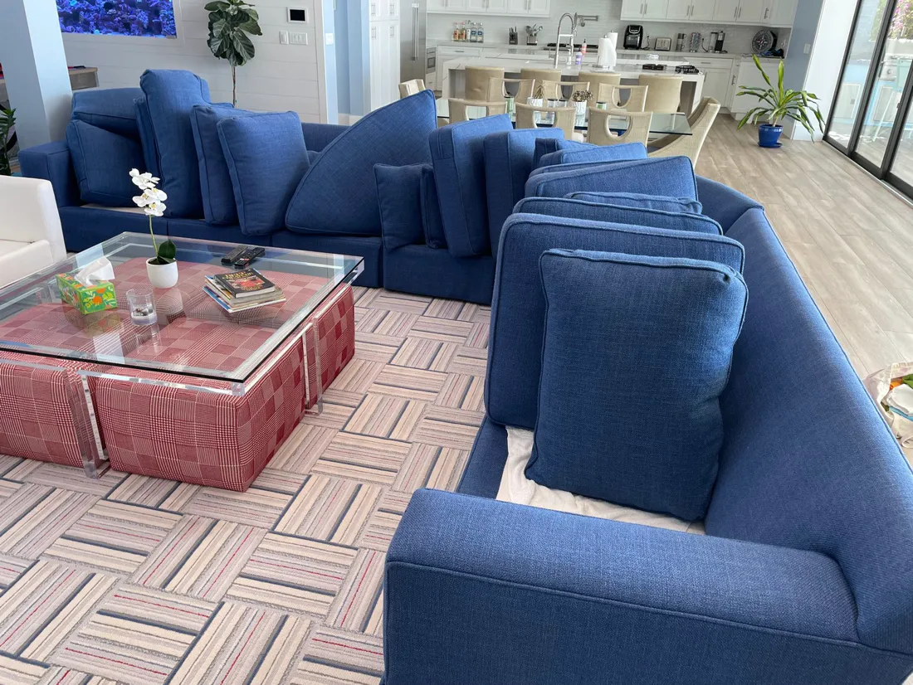
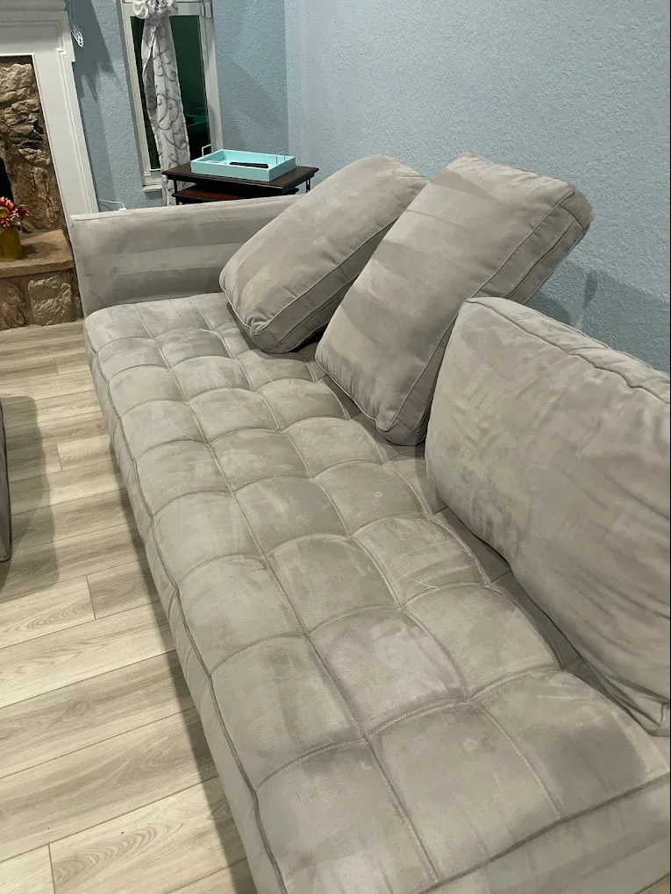
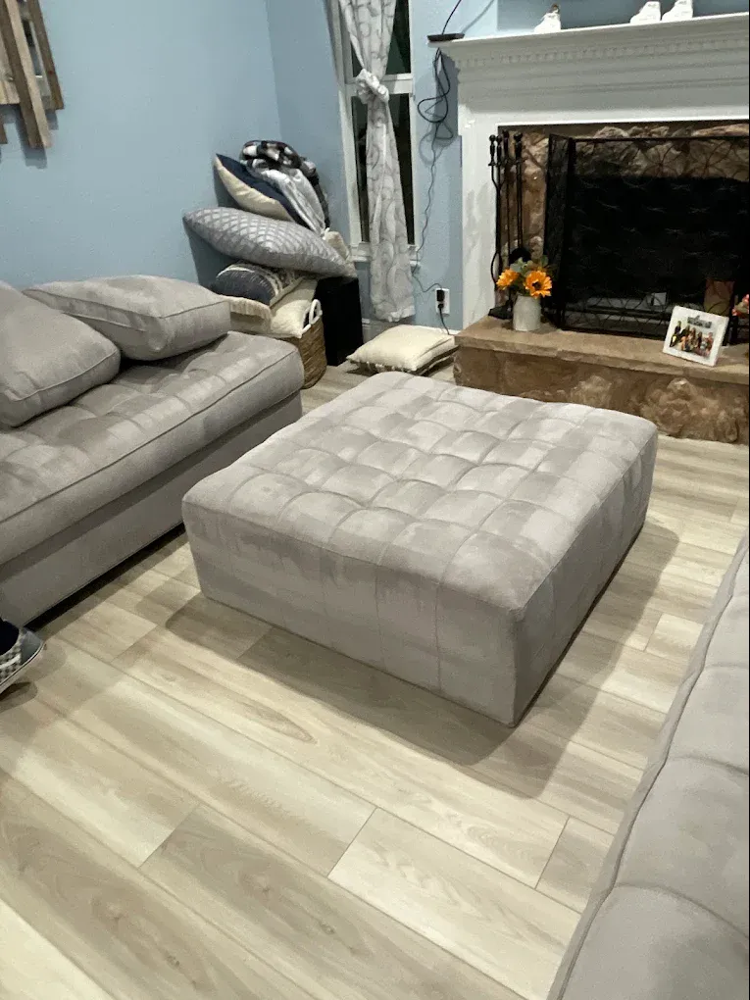
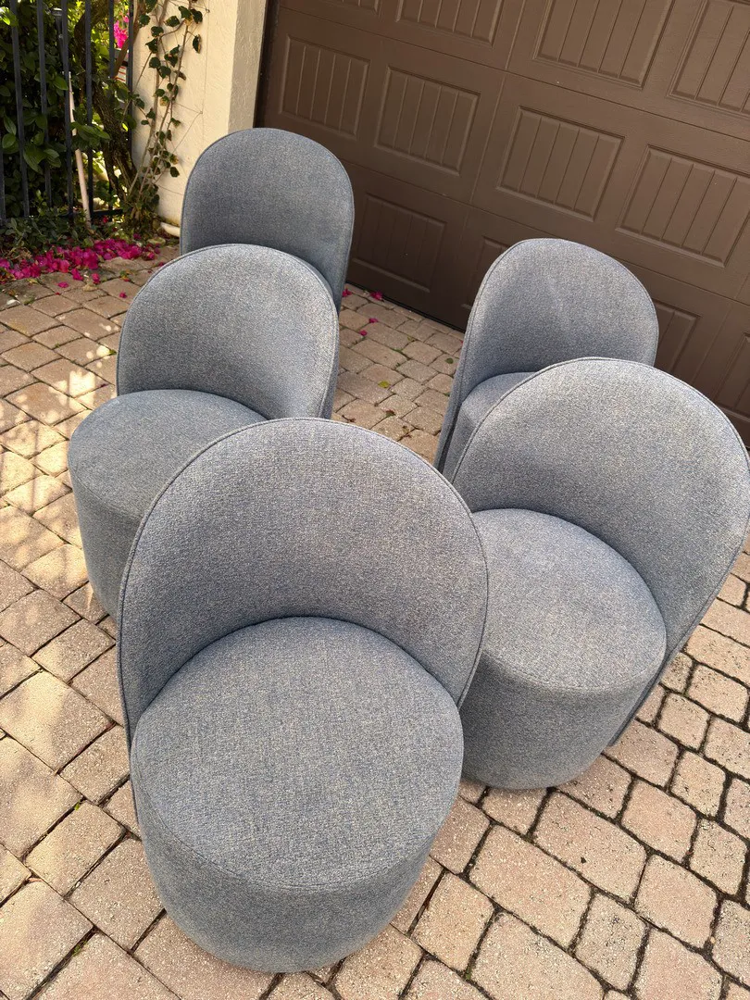
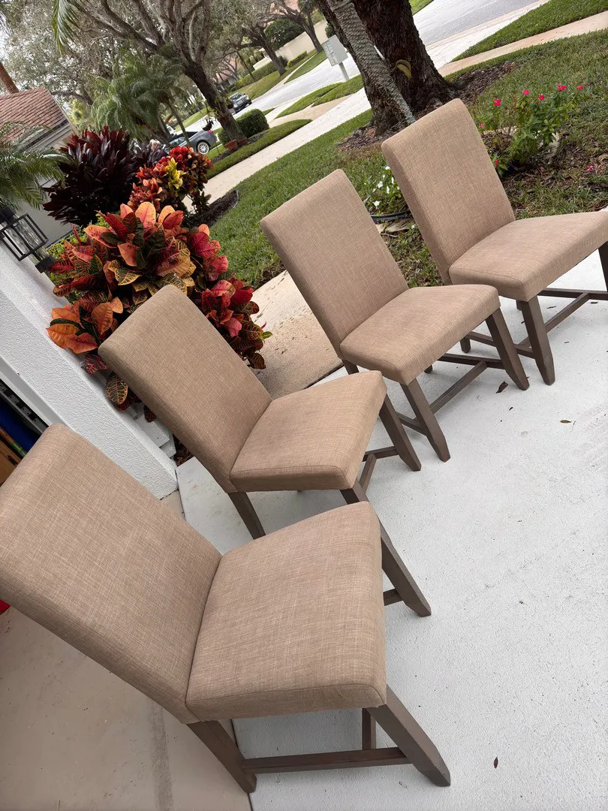
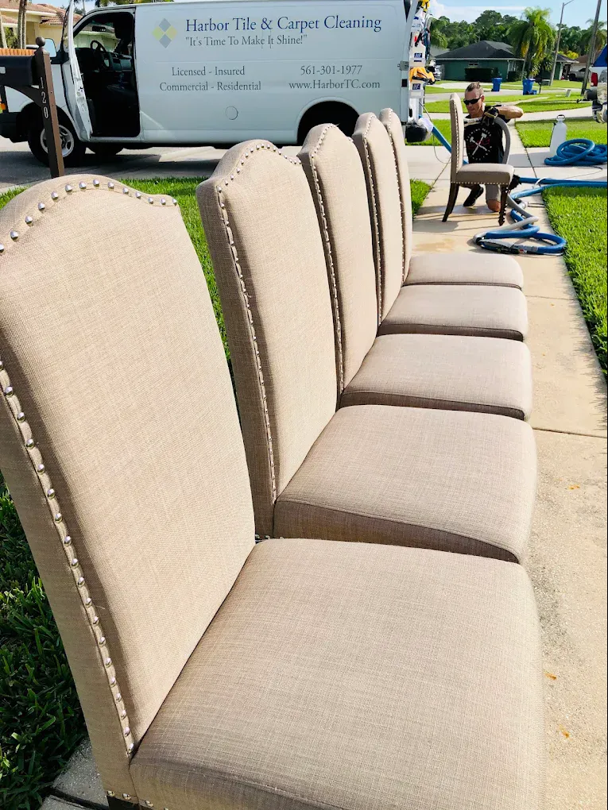

Upholstery cleaning in Palm Beach County
Sofas, sectionals, chairs, mattresses and outdoor cushions. Stains, odors and pet hair lifted with fabric-safe care.
- 240five-star Google reviews
- 15+years in Palm Beach County
- 100%satisfaction guarantee
What upholstery can Harbor clean?
If it has fabric, Harbor can clean it: sofas, sectionals, loveseats, reading chairs, dining chairs, ottomans, mattresses, and outdoor and patio cushions.
Every piece goes through a six-step, fabric-safe process that lifts embedded dirt and body oils, stains, odors and pet hair, and the work is backed by a 100% satisfaction guarantee.
Drag to compare. An illustration of a linen sectional before and after a deep clean: years of greyed arms and seats, refreshed.
Our six-step upholstery process
Fabric holds what it touches. These six steps reach the soil and oils deep in the weave, gently.
Inspect and protect
We check each piece and its fabric, note stains and wear, and protect the room with corner guards and floor runners.
Vacuum
A professional vacuum lifts loose dirt, crumbs and pet hair out of the seams and cushions first.
Fabric-safe pre-spray
A pre-spray matched to the fabric loosens body oils, soil and stains without harming the material.
Machine agitation
An Austrian-engineered bristle machine works the solution gently through the weave.
Hot-water extraction
Hot water rinses the fabric and pulls the loosened soil out, instead of leaving it behind.
Air movers
Air movers speed drying, so your furniture is back in use sooner.
If it has fabric, we can clean it
Indoors and out, everyday pieces and the ones you are careful with.
- Sofas, sectionals and loveseats
- Reading chairs, swivel chairs and ottomans
- Upholstered dining chairs
- Mattresses
- Outdoor furniture and patio cushions
- Delicate fabrics, with fabric-safe solutions
- Stains, odors and pet hair, with pet stain & odor removal
Real upholstery jobs
Photographs taken by the Harbor crew in Palm Beach County homes.






Why upholstery looks tired, even when it is not dirty
Most of what dulls fabric never shows up as a stain.
- Body oils
- Hands, arms and legs leave oils on the same spots every day, and oils hold onto soil. That is why arms and seat fronts go grey first.
- Humidity
- Damp air keeps fabric from ever fully drying out, so soil settles deeper and odors linger.
- Pets and family life
- Pet hair, dander and everyday spills work into the weave, where a lint roller cannot reach.
Upholstery questions, answered
Is upholstery cleaning safe for delicate fabrics?
Yes. Harbor uses fabric-safe solutions and gentle machine agitation, and checks each fabric before cleaning.
Do you clean mattresses?
Yes. Mattress cleaning removes allergens, dust mites and the buildup that collects in a mattress over time.
Can you clean outdoor furniture and patio cushions?
Yes. Outdoor furniture and patio cushions are cleaned with the same fabric-safe process.
Can you remove pet hair, stains and odors?
Yes. Upholstery cleaning lifts pet hair, stains and odors, and stubborn pet accidents are treated through Harbor's pet stain and odor removal service.
How long does upholstery take to dry?
Air movers are set up to speed drying, so furniture is back in use sooner. Your technician will tell you when each piece is ready.
How much does upholstery cleaning cost?
Every quote is personalized, because cost depends on the number and size of the pieces and the fabric. Request a free personalized quote online or call or text (561) 301-1977.
Is there a guarantee?
Yes. Harbor's upholstery cleaning is backed by a 100% satisfaction guarantee.
Upholstery cleaning near you
- Jupiter
- Palm Beach Gardens
- Palm Beach Island
- West Palm Beach
- Wellington
- Boynton Beach
- Delray Beach
- Boca Raton
- Deerfield Beach
Get a Personalized Quote for upholstery cleaning
Tell us about your furniture and we will get back to you with a personalized estimate. Prefer to talk? Call or text (561) 301-1977.
Your request is ready.
Send it to Harbor by text or email. Nothing is sent until you choose.
Text it to Harbor Email it instead